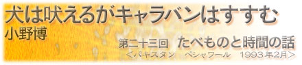

|  |
|
私がパキスタンを訪れた時、たまたまラマダン（断食月）の時期だった。人々は、日の出から日の入りまで一切の食べ物、タバコ、飲み物を口にしない。 ヒンズー教徒の多いインドからパキスタンに入国したとたん、インド側とはうって変わって店をしめたレストランが目に付く。開いているようでも、入り口に厚いカーテンがかけてあるので、中の様子がうかがえない。私はムスリムではないから食べても平気なのだが、やはり人前でものを食べるのに躊躇した。 しかし、お腹はすく。私は意を決して、入り口のカーテンの向こうから、カレーのにおいが漂ってくるレストランに入った。中には乳飲み子を抱えた母親らしき人と、おじいさんの2人の客がいた。豆電球の薄暗い光の中で、ひたすらもくもくと何か悪いことでもしているようにカレーを食べている。 私は、藤子・F・不二雄のある短編を思い出した。それは、人間の性欲と食欲に関する物語で、人々は公衆の面前でセックスをし、ドンドン子供を作り、いらなくなったら捨てる。逆に食事は隠れてすべきこととされ、家族の団欒もカーテンを閉めて暗い中で行われるのだ。登場人物の一人がこんなことをいう。 「性欲は子孫繁栄に必要であるから社会的な欲望であるが、食欲というのは個体維持にのみ必要な個人的な欲望である。だから個人的な欲望より社会的な欲望をオープンにするのは当たり前じゃないか」 もちろん、ラマダン時期のイスラム国で性欲がオープンにされているという話ではない。だが、限られた時間帯であれ、食欲が否定されていることは、私にとって驚くべきことだった。食を否定された人たちのそばで、ものを食べるというのは背徳的な行為に感じる。私は、周囲の視線が突き刺さるなかで、羊のカレーを食べた。味見もしていないコックが作り、朝から何も食べていないウェイターが親の敵のようににらみつけながら持ってきたカレーを。 私はそそくさと食べ終え、悪いことをしているのが見つからないように、さっとカーテンの脇をすり抜けるようにして外に出た。 しかし、外に出ても、人の視線から逃れることはできなかった。空腹の人間は、満腹の人間が醸し出すオーラを感じとるのだろう。みんながジロジロ見るので、食事後に公園で一服することも出来ない。私は公衆トイレの個室に行き、隠れるようにタバコを吸った。こんな経験、高校生以来だ。ところが、煙の匂いをかぎつけ、ドアをものすごい勢いで叩く人がいた。出てこい！ と怒鳴れて、しぶしぶと出ていくと、相手は、日本人のいかにも旅行者という顔の私を見て、ようやく怒りをおさめてくれた。吸いたいならホテルの部屋で吸え、と忠告される。 もっと大変なのは、長時間の移動だ。パキスタンは冬でも昼間は相当暑い。何時間もバスに揺られている間、飲み物も食事も出来ないのは本当に辛い。さ ながら断食ツアーである。早朝のバスに乗ったときのことだ。3時のトイレ休憩の時、私はついに空腹が我慢できなくなり、思わずドライブインでハンバーガーとコーラを買った。だが、その場で食べようとしたら、車で食べろと言われた。車と言ってもみんなが乗っているバスだし、食べられるはずがない。建物の陰で食べようとしたら近所の人に、追い出された。そうこうしているうちにバスが出発する時間になってしまった。ハンバーガーを持ってのるわけにいかないので、野良犬に与え、コーラだけ持ってバスに帰った。 だが、そのコーラも飲めるはずがなかった。他の乗客の唇はカサカサに乾燥し、喉はひりついている。私はコーラをバックにしまった。飲み物や食べ物やタバコ以外の事を考えようとしたが、思い浮かぶのはそのことばかりばかり。空腹と喉の渇きでぼんやりとした頭で、ひたすら窓ごしを通りすぎる家を数えていた。その時間は異常に苦痛で長かった。 何かに支配されているようなこの感じ。この感覚には覚えがある。私は学生時代、携帯電話工場の夜勤をしていた。夕方から朝までずっと立ち仕事で、単調な作業が永遠に続くのではないかと感じた。一体いくつ携帯電話を作れば朝になるのだろうと思いながら、ひたすら数を数えていく。ベルトコンベヤーの部品に手を加え、それが終わると、目の前にまた部品が現れる。そのくり返し。恐ろしく時間がたつのが遅い。1時間は経って欲しいと願うのだけれど、5分しか時間が過ぎていない。逃げ出したくなるが、逃げ出したところで他にお金を作るめどはないから、同じ作業を繰り返すしかないのだ。私は、あのとき、時間を誰かに乗っ取られているような感覚に捕らわれていた。そんなことを、パキスタンの地で思い出した。 バスが目的地に着いた頃は、その日の断食があける直前だった。私は空腹と喉の渇きでフラフラになりながらレストランに行き、レモン水と羊肉のスープとナンを注文した。そして、お預けを食った犬のように、目の前に運ばれてきた料理を眺めた。心臓の鼓動1つが、1時間くらいに感じる。周りの人間も、断食が終わる合図を待っていて、私と同じような顔で心臓の鼓動を聞いているようだった。 それから途方もない時間が流れた気がして、目の前が滲み始めたそのとき、近くのモスクから断食開けの合図が流れた。私は、その瞬間レモン水を一気に飲み、次に、鞄からぬるいコーラを出して一気に飲んだ。喉がひりついたが、スープとナンを流し込むと、やっと目の前がクリアになってきた。タバコに火を付け、もう一品料理を頼んだ時、何かの支配から解放された気がした。工場労働の作業終了サイレンを聞いた瞬間のように、ついに自分の時間をとり戻したのだ。 |
| 小野博（おの・ひろし） 1971年岡山生まれ。写真家・映像作家。多摩美術大学彫刻科卒業。1992年から世界を移動しながら作品制作をしている。1999年コニカ写真奨励賞を受賞して50カ国を巡り「地球の線」を制作。2001年コニカプラザ、反-記憶展・横浜美術館、Twilight Sleep展・Instituto Giapponese di Cultura, Roma（Italy）で発表する。現在アムステルダム在住。VOCA賞奨励賞受賞。 |